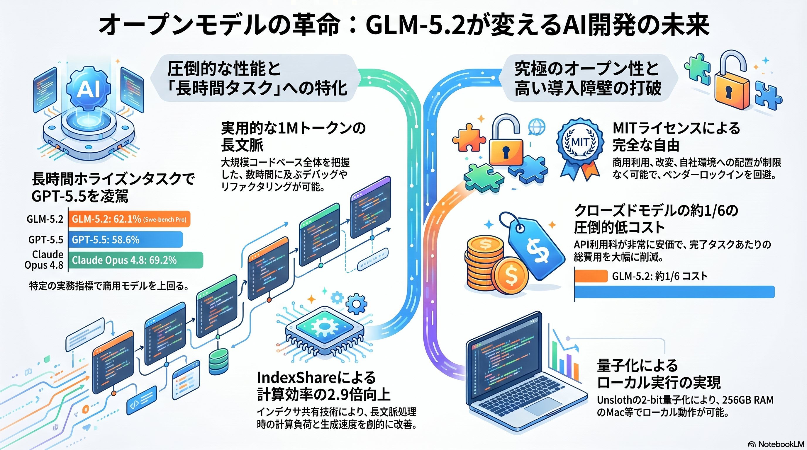
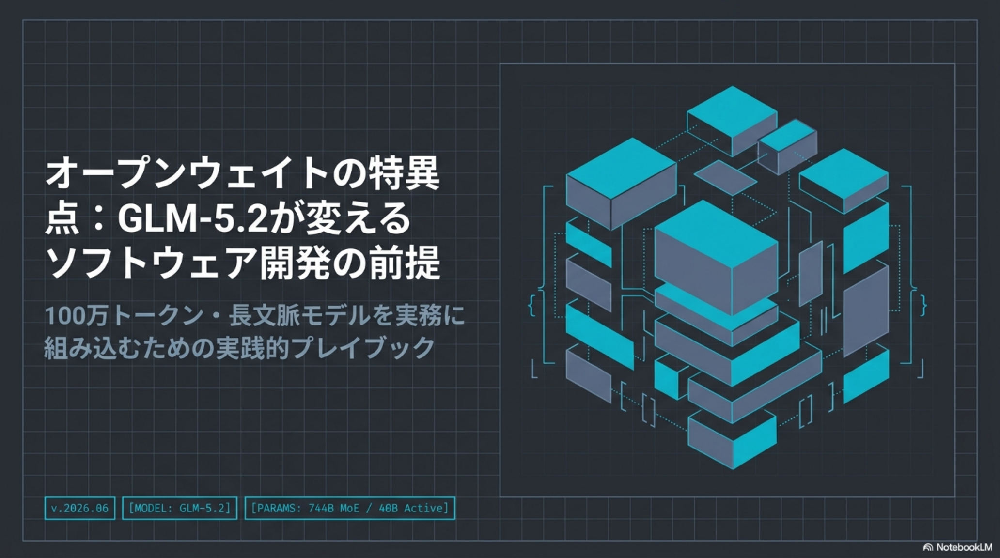
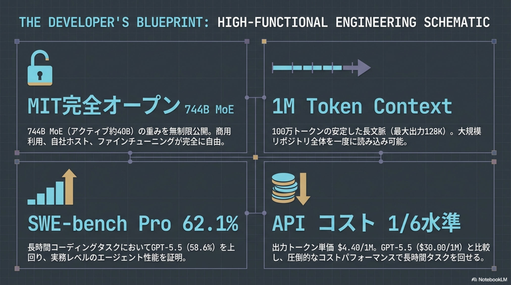
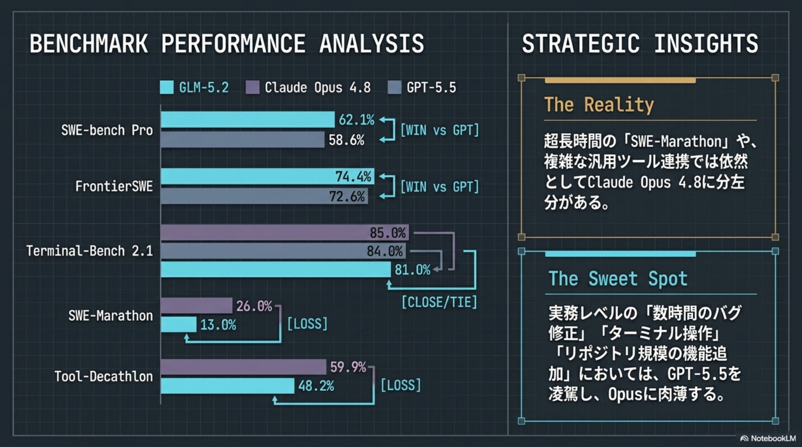
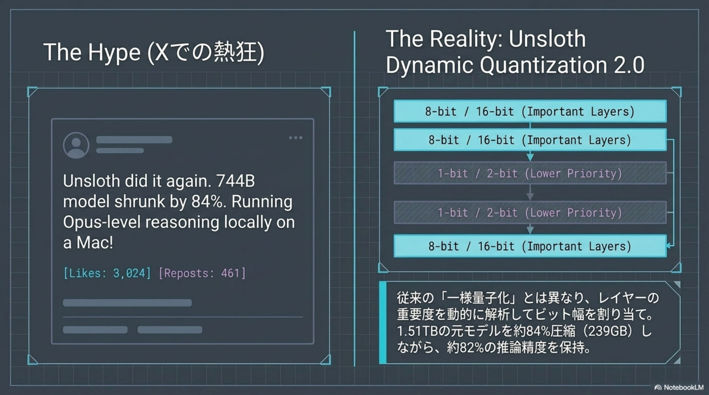
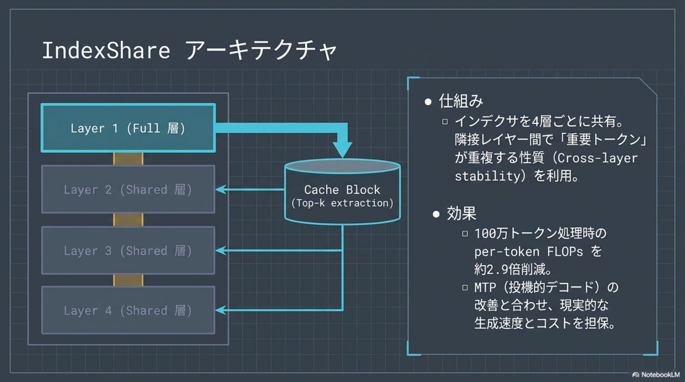
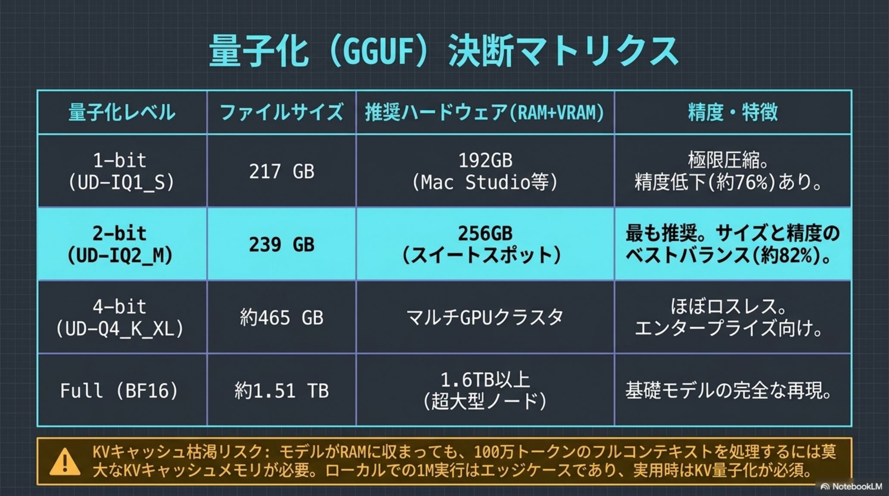
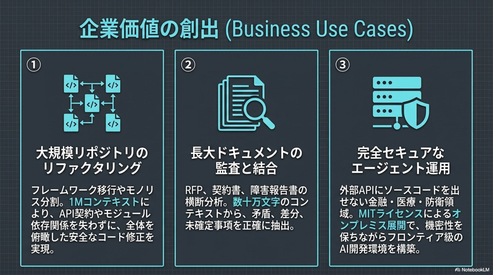
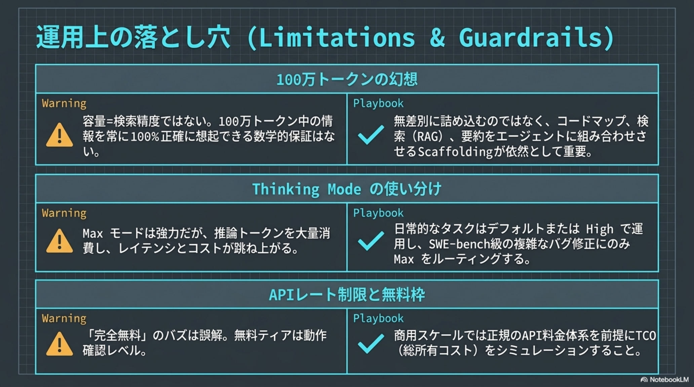
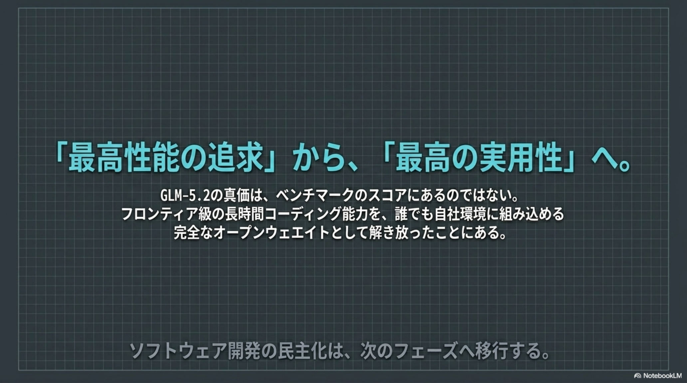

クローズドの壁を、
オープンが砕く。
2026年6月、Z.ai が発表した GLM-5.2 は、MITライセンスのオープンウェイトでありながら、1Mトークンの長文脈と長時間継続（Long-horizon）タスクへの特化で、クローズド勢（GPT-5.5・Claude Opus 4.8）に匹敵——一部で凌駕する。コストは約6分の1。AIを「外部サービス」から、自社で運用する「資産」へと変える。

「巨大」ではなく、
効率で殴る。
GLM-5.2 は単なる「大きなモデル」ではない。総計約744B〜753B（アクティブ約40B）の MoE（混合専門家）構成に、1Mトークンの文脈ウィンドウ。鍵は、長文脈処理の計算負荷を劇的に削る新アーキテクチャ IndexShare だ。
IndexShare
隣接レイヤー間でトークンの選択結果（Top-k）が似る性質を利用し、4層ごとにインデクサを共有する。
FLOPs 削減
1Mトークン処理時の計算量を約2.9倍削減。推論速度の向上とコスト低減を同時に実現する。
ローカル実行
軽量化が、巨大MoEを自社環境で動かす道を開く。クラウド依存からの脱却の前提に。
規模競争の土俵を、効率で降りた。 IndexShare と MoE により、GLM-5.2 は「パラメータを増やすほど重く高価になる」常識を回避した。1M文脈をローカルで——この一点が、後段のコストと主権の物語すべての前提になる。
クローズドの壁を、
エンジニアリングで破る。
ベンチマークは、GLM-5.2 が実務レベルのコーディングおよび自律型エージェントとして世界最高峰の知能を持つことを示す。特に長時間継続型のソフトウェア開発で、クローズドモデルに肉薄・凌駕する。
「数時間規模のデバッグを、目的を見失わず完遂する」 GLM-5.2 はリポジトリ全体の調査→計画→エラー解析→修正の反復を最後までやり切る。超難関 SWE-Marathon では依然 Opus 4.8 に一日の長があるが、一般的な実務リファクタリングでは同等の能力を発揮する。
「性能のためにコストを払う」
時代の終わり。
GLM-5.2 の登場は、AIのコスト構造の常識を塗り替えた。100万トークンあたりの API コストで見ると、出力単価は GPT-5.5 の約6分の1。性能を落とさずに、運用コストを一桁変える。
長時間稼働する自律エージェントを「多数」回せる。 出力コストが一桁下がると、これまで採算が合わなかった常時稼働のコーディングエージェント群が現実解になる。コスト最適化が必要なプロジェクトほど、GLM-5.2 の経済性が効く。
No NVIDIA.
No American compute.
GLM-5.2 は、米国の輸出規制下において、中国国内のスタック（Huawei Ascend チップ ＋ MindSpore）のみで学習された。NVIDIA を一切使わずフロンティア級モデルを成功させた事実は、特定ベンダーや政治的背景に依存しない「主権AI（Sovereign AI）」の現実味を世界に示した。
主権AI
ベンダーや政治的背景に依存しない AI を、自国・自社のスタックで構築できることを実証した。
供給網の多極化
10万台規模の Huawei Ascend クラスタのみで学習。AIインフラの供給網が一極集中から動く。
データ主権
オープンウェイトゆえ、機密情報を外部に送信せず、自社環境でモデルを完全にコントロールできる。
「主権AI」は理念ではなく、実装可能になった。 輸出規制という制約の下で、No NVIDIA のフロンティアモデルが成立した——これは、特定企業の規約・価格改定・地政学リスクに左右されない持続可能な AI インフラが、現実の選択肢になったことを意味する。
手元で動かし、
既存ツールに挿す。
MITライセンスのオープンウェイトゆえ、企業は機密を外部に送らず自社環境で運用できる。さらに OpenAI / Anthropic 互換のAPIエンドポイントを備え、既存の開発ワークフローへキーとURLの差し替えだけで統合できる。
ローカル実行
2-bit 量子化（UD-IQ2_M）で約239GBまで圧縮。256GB ユニファイドメモリの Mac Studio 等で読み込み報告あり。
UD-IQ2_M · ~239GB既存ツール統合
キーとURLの差し替えのみで Cursor / Claude Code / Aider / Cline 等に即統合。ワークフローを変えずに移行できる。
drop-in / base_url 差替運用上の注意
重みだけでメモリの大半を占有する。1M の KV キャッシュをフル活用するには、マルチGPU 環境や API 利用が現実的。
KV cache @1M = heavy推奨される
ユースケース。
GLM-5.2 が最も効くのは、機密性・コスト・独立性のいずれかが要件として強い現場だ。性能を犠牲にせずに、それらを同時に満たせる点が新しい。
逆に言えば、外部APIで十分な小規模・単発タスクでは、わざわざローカル運用の重量級スタックを抱える必要はない。「何を自分の資産として持つか」の判断が問われる。
- 01高機密開発 — 外部APIに送れない金融・医療等、大規模システムのリファクタリング。
- 02コスト最適化 — 長時間稼働する自律コーディングエージェントを多数運用するプロジェクト。
- 03ロックイン回避 — 特定企業の規約・価格改定に左右されない、持続可能なAIインフラの構築。
AIを「消費する」段階から、「運用する資産」へ。 性能のために機密性とコストを犠牲にする時代は終わった。最高峰の知能を手元で完全にコントロールし、何を自動化するかが、これからの競争力を決定づける。
「性能・コスト・自由度」が、GLM-5.2 Developer Blueprint — 2026·06·18
実用レベルで統合された。
ポスト・クローズド時代の象徴。
同日の、AI ヘッドライン。
GLM-5.2 の周辺で、生命科学・医療・資金調達・インフラの動きも加速した。2026年6月18日の主要トピックを俯瞰する。
LifeSciBench
AIが現実の生命科学研究タスクをどう扱うかを評価する、専門家作成のベンチマーク。客観評価の基盤に。
openai.com / life-sci-benchGoogle AMIE
会話型AIが慢性疾患の管理で主治医と同等の性能を達成。AIの医療現場貢献の可能性を示唆。
blog.google / amiePramaana Labs $27M
AIの形式検証スタートアップがシード調達。法務・医薬・税務など高信頼領域を狙う。
techcrunch.com日立 × OpenAI Codex
Codex でレガシーシステムを解析・刷新。上流仕様の可視化と移行テストを効率化、サイバー防衛も視野。
itmedia.co.jpThreads 5億 MAU
月間アクティブが5億人に到達。フィード最適化「Dear Algo」を拡張した「Your Algo」を導入予定。
gigazine.netMLPerf Training v6.0
NVIDIA・AMD の AIサーバー学習性能を評価。AIモデル開発のハードウェア選定の参考指標に。
gigazine.net / mlperf「評価」と「検証」が、同時にテーマ化した一日だった。 LifeSciBench・AMIE・MLPerf・形式検証——GLM-5.2 のベンチマーク話と響き合うように、AIをどう測り、どう信頼するかが業界全体の焦点になっている。
GLM-5.2 の全貌、原典より。
本スライドの元になった Developer Blueprint（全15ページ）の主要図版。スペック・ベンチマーク・経済性・主権・実装の論点を、原典のビジュアルで俯瞰する。









出典と関連リファレンス。
本スライドは Z.ai による GLM-5.2 の公開情報と Developer Blueprint に基づく解説。ベンチマーク・コスト・量子化仕様は各一次ソースでの裏取りを推奨する。